Your guide to the Velocity AI platform
Velocity is your always-on AI texting team. It follows up with every lead and member at the right moment, books appointments, answers questions, and brings people back, while you watch it all from one dashboard. This guide explains every part of that dashboard in plain language, the campaigns running behind the scenes, and how to get the best results.
Last updated June 2026
What to check regularly
Six places in the dashboard that show the system is working and tell you where to push next.
- Value Tracker — AI conversions. See how many bookings and members the AI converted and the revenue it added, your clearest read on what the system is producing.
- Analytics — conversion rates. Track booking rate and lead-to-member conversion, and use the Funnel to spot the stage where people drop off.
- Booking schedule. Check Booking Notifications for the appointments the AI has booked, so your calendar and front desk stay in sync.
- Employee performance. Compare each AI Employee on reach, reply rate, and bookings to see which campaigns are pulling their weight.
- Custom business digest. Set up the scheduled report so a digest of your key numbers lands in your inbox weekly, bi-weekly, or monthly.
What to do regularly
A few habits that keep the AI sharp and turn your member relationships into more bookings.
- Flag and improve AI messages. Occasionally read the AI Employee inboxes and flag anything off, your feedback is how the messaging keeps getting better.
- Work your weekly milestone email. The Friday 30/60/90 report lists your own sign-ups by churn risk with the homework already done. You do the personal check-in and help them book their next session.
- Keep CRM notes current. One good note per member: goals, how they're feeling, anything personal. Update it when something changes, the AI uses your notes to personalize its texts and make its reports smarter.
- Watch your own conversion stats. Check your conversion numbers in Analytics so you can see what's landing and lift your close rate.
- Send us customer feedback. Gather what members tell you in person and pass it to your Velocity contact so we can sharpen the messages and offers.
- What does Velocity actually do? It texts every lead and member at the right moment from your studio's number, answers their questions, and books them in, automatically.
- Do I have to run anything day to day? No. The campaigns run themselves; you check your numbers and step in only when a conversation is flagged for a human.
- What is it earning me? The Value Tracker shows it in dollars: revenue added plus labor saved, minus what you pay. Net Return is your bottom line.
- How do I change what the AI says about pricing, hours, or offers? Update the Knowledge Base (or tell us) and every future text uses the new facts.
- Can my team take over a conversation? Yes, any time. Open the thread and reply; the AI steps back so you're not both talking.
- What if someone doesn't want texts? Handled automatically. A "STOP" reply (or a polite no-thanks) puts them on the Do Not Contact list and all outreach ends.
- How do I know when it books someone? Booking Notifications keeps a running log of every appointment the AI books, so your front desk is never surprised.
Overview
Velocity connects to your booking system (ClubReady, WellnessLiving, or Spark) and watches for the moments that matter: a new lead, an upcoming appointment, a member who's gone quiet, a cancellation. When one of those moments happens, an AI assistant reaches out by text from your studio's number, holds a natural back-and-forth conversation, and drives toward the outcome you want, usually a booked visit or a renewed membership.
Everything the AI does is visible to you in real time. You can read any conversation, step in whenever you like, see exactly how much revenue the system is producing, and control the facts it uses to answer questions. Nothing is a black box.
The one-line version: Velocity is the follow-up your team never has time for, done instantly, consistently, and around the clock, for every single lead and member.
How it works
You don't have to run anything day to day. The system runs a simple loop for you:
- It listens. Velocity stays synced with your CRM and notices events as they happen, new leads, booked demos, no-shows, cancellations, birthdays, and members who haven't been in for a while.
- It reaches out. At the right moment, the AI sends a friendly, on-brand text from your studio's phone number, written to sound like a real person on your team.
- It holds the conversation. When the person replies, the AI answers their questions using your business facts, handles objections, and offers to book them in.
- It books and updates. Appointments get scheduled, reminders go out, and your CRM stays up to date, automatically.
- It hands off when needed. If a conversation needs a human, the AI flags it for your team instead of guessing.
Your job is light: keep the AI's knowledge accurate, glance at flagged conversations, and check your numbers. The rest of this guide walks through where to do each of those things.
Key concepts
The dashboard is organized around a few simple ideas. Once these click, everything else is easy to find.
🤖 AI Employees
Each "employee" is an AI assistant dedicated to one job, nurturing new leads, winning back old ones, retaining members, or answering website inquiries. They work the conversations so your team doesn't have to.
📂 Information Sets
The controls behind the AI: the facts it knows, the timing of its messages, the people it shouldn't contact, and the conversations a human should review. Keep the facts current here and review what's flagged, that's how you steer the system.
📍 Locations
If you run more than one studio, every page filters to the location you've selected. Conversations, numbers, and settings are kept separate and clean per location.
🙋 Human in the loop
The AI is confident on routine conversations and cautious on tricky ones. Anything sensitive or uncertain is set aside for a person, so you stay in control of the important moments.
Campaigns
Campaigns are the automated message flows that do the actual outreach, each one triggered by a real event in your CRM. The Campaigns page in your dashboard shows every campaign type and whether it's Active for your location, and for each one, four numbers at a glance: Total Sent, In Follow-up, Response Rate, and Booking Rate, plus the exact message sequence it sends. Want a campaign switched on, paused, or reworded? Tell your Velocity contact and it's done the same day.
You don't run these day to day. Below is every campaign type, grouped into the families they belong to, and exactly what it does, so you always know what your leads and members are receiving. The short line under each name is the description shown on the Campaigns page itself.
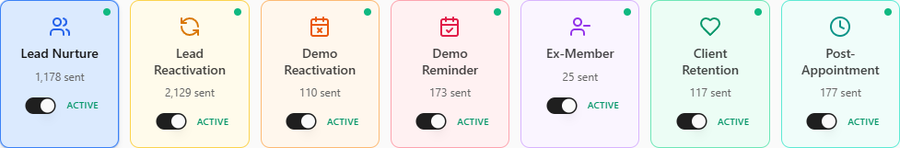
🌱 Lead Nurture, for brand-new leads
The instant a new lead comes in, the AI texts to introduce your studio, answer first questions, and guide them toward booking a first visit, all while interest is still hot. Fast first contact is the single biggest driver of lead conversion, and this runs in seconds, any time of day, then keeps following up over a sequence so no one is forgotten after one unanswered text.
Once a new lead has a visit on the calendar, a friendly reminder keeps it top of mind and makes it easy to confirm or move the time, so first appointments actually happen instead of quietly slipping away.
🔄 Lead Reactivation, for leads who went quiet
Reaches back out to older leads who once showed interest but never booked, with a fresh, low-pressure nudge that recovers appointments from a list most studios write off and never touch again. Each person is approached just once, so it never feels like spam.
For leads who were talking with you recently but stopped short of booking, a timely follow-up picks the conversation back up while they still remember you and your offer.
About a month after someone came in for a demo or intro session but didn't join, the AI checks back in, gently addresses what held them back, and invites them to commit, recovering sales that would otherwise walk out the door.
📅 Appointment, around a booked session
About two hours before a booked demo, the AI sends a reminder text asking the person to confirm they're still coming, or to reschedule if they can't make it. It's one of the most effective ways to cut no-shows: every confirmed appointment is one your team can count on, and anyone who needs to move their slot can do it right from the text instead of simply not showing up.
After someone finishes a visit, a warm check-in thanks them, gets a quick read on how it went, and points them to a clear next step, so a good first impression turns into a second visit instead of a dead end.
When someone misses their appointment, or cancels and hasn't booked a new time within about a week, the AI reaches out to get them back on the calendar, so a missed slot is never the end of the conversation.
❤️ Client Retention, for active members
When a member looks at real risk of leaving, the AI reaches out to ask how things are going and what could be better, surfacing problems early so you can fix them and keep the membership before it lapses.
For members whose attendance is starting to slip, a friendly nudge checks in and encourages them to get their next session on the calendar, before a quiet stretch turns into a cancellation.
A simple, personal happy-birthday text that reminds members you care about them as people, not just attendance, the kind of small touch that keeps people loyal.
Retention outreach is aimed at the members who need it most, the high-risk and medium-risk groups, and skips members who already have a stack of unused credits to work through, so the messages always land as relevant rather than pushy.
💜 Ex-Member, for people who've left
Respectfully invites former members to return, often paired with the right offer, recovering revenue from people who already know and like your studio, usually your warmest audience. A short exit survey is built into the sequence, so even the ones who don't come back tell you why they left.
🌐 Other channels
When a prospect fills out a form or message box on your website, the AI replies right away to answer their question and move them toward a booking, so web leads get the same instant response as everyone else instead of waiting for someone to check the inbox.
For studios running social campaigns, the AI handles incoming Facebook and Instagram messages the same way it handles texts, answering questions and guiding people toward a first visit without you having to watch the inbox.
Not every campaign runs at every location. Which ones are active depends on your brand, your CRM, and what you've asked us to turn on. If a campaign you want isn't running for your studio yet, just ask and we'll switch it on.
The Overview tab: your numbers
The Overview group is where you go to answer "is this working, and what is it earning me?" These pages turn thousands of text messages into clear performance you can act on.
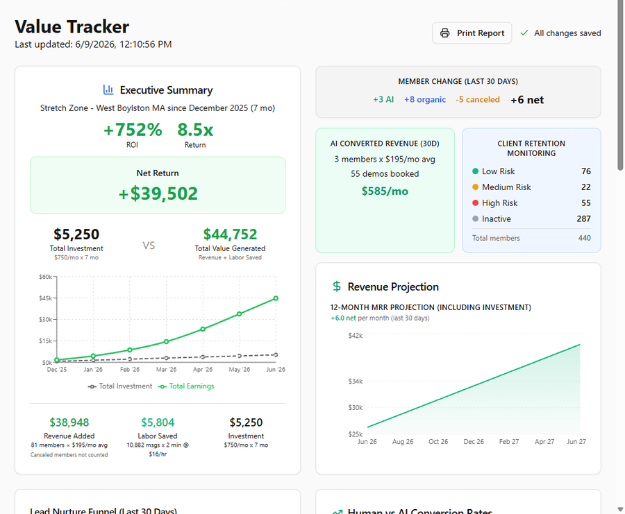
Your home screen and the most important page in the app. It answers one question honestly: what is Velocity actually doing for my business? At the top you can view All Time or zoom into any single month, and a Print Report button turns the whole page into a clean report for partners or budget conversations.
The headline numbers (Executive Summary). The summary at the top is your bottom line at a glance:
- Total Investment — what you pay for the system in that period.
- Total Value Generated — the full dollar value the AI produced.
- Net Return — value generated minus your investment: your profit from the system.
- Revenue Added — new revenue the AI drove. Deliberately conservative, cancelled members are not counted.
- Labor Saved — the staff time and cost the AI handled instead of your team.
Proof it's working (before vs after). Baseline vs Current Metrics and Human vs AI Conversion Rates place your pre-AI numbers next to your numbers now, booking rate and show rate against the pre-AI baseline, so the lift is impossible to argue with.
Operational signals. A few cards tell you how the machine is running, not just what it earned:
- Speed to Lead — how fast the AI engages new leads (measured in seconds) against the hours-long industry average. Faster contact means more bookings, and this is where the AI beats any human team.
- Member Change (30d) — members gained and lost in the last 30 days, split into AI-driven, organic, and cancellations, so you see net growth at a glance.
- AI Converted Revenue (30d) — the monthly recurring revenue from members the AI converted in the last 30 days.
- Client Retention Monitoring — your member base sorted by churn risk (Low, Medium, High, Inactive). The high-risk count is your early-warning system for cancellations.
- After-Hours — messages and bookings handled outside business hours, the activity a closed front desk would have missed.
Momentum over time. Revenue Projection charts your 12-month trajectory, while Monthly Performance, the Lead Nurture Funnel, and the monthly breakdown show how each month stacked up.
How to use it to run the business: open it weekly. A healthy Net Return is hard proof of ROI for any conversation about the spend. Watch Client Retention Monitoring: a rising High Risk count means it's time for personal outreach to those members before they cancel. Member Change tells you instantly whether you're growing or shrinking this month and whether the AI or organic traffic is driving it. And when you need to justify the spend to a partner or owner, Print Report hands you the whole page as a document.
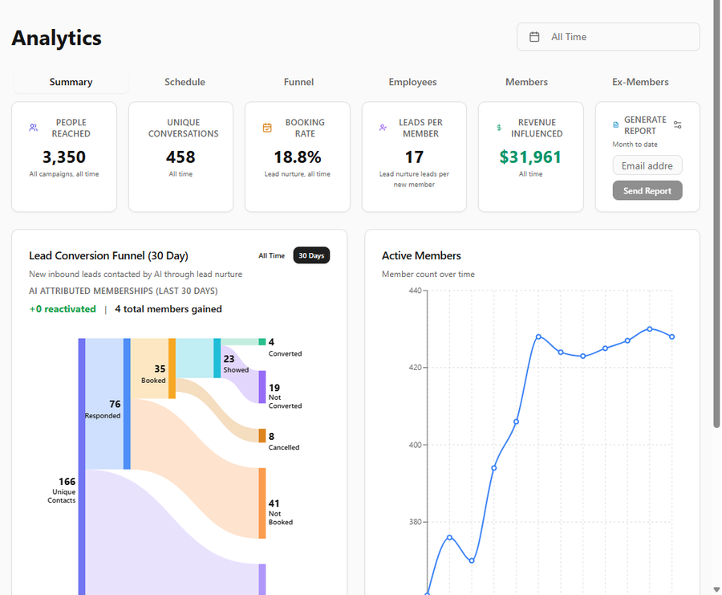
Where Value Tracker shows the money, Analytics shows the why behind it. It's organized into tabs so you can go from a high-level read down to the exact stage that needs attention.
Summary. Your at-a-glance scoreboard: People Reached, Unique Conversations, Booking Rate, Leads per Member (how many leads it takes to make one new member), Revenue Influenced, and Active Members over time. You can also schedule this as an automatic report, weekly, bi-weekly, or monthly, sent straight to your inbox.
Funnel. A visual map of how people flow from first contact, to booked, to member, with the drop-off shown at each stage. The fastest way to see exactly where you're losing people.
Schedule. When your audience actually replies and books, by day and hour, so you know the best windows to push a promo or staff the front desk.
Employees. Each AI Employee's performance side by side, reach, reply rate, and bookings, so you can see which campaigns are pulling their weight.
Members & Ex-Members. The Members tab tracks the health of your current base and who's at risk of churning. Ex-Members analyzes who left and the win-back opportunity among them.
Franchise Overview. For owners overseeing multiple studios, every location ranked side by side on the metrics that matter. Manager accounts
How to use it to run the business: start on Summary for the trend, then open Funnel and fix the stage with the biggest drop-off, a leak between "booked" and "showed" is a no-show problem (lean on Demo Reminder), while a leak at "replied" is a messaging or offer problem. Use Schedule to time promos for when people actually respond, watch the Members tab to catch churn early and trigger retention outreach, and if a message's wording is ever in question, ask us, we settle it with persona testing, not opinions. Multi-location? Franchise Overview shows who's best so you can standardize on what works. Set the scheduled report so the key numbers come to you without logging in.
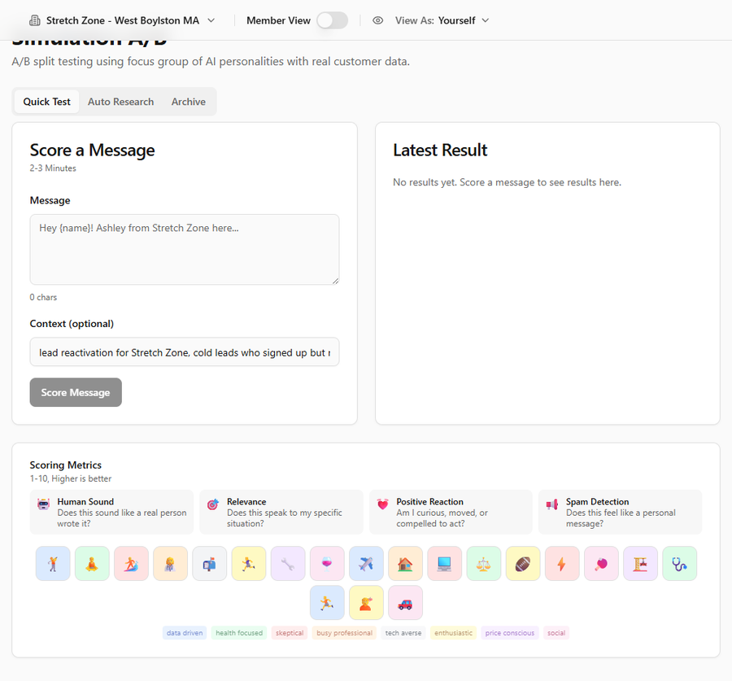
The testing lab where the Velocity team validates your messaging. Before a wording goes out widely, we run it past simulated customer profiles built from real customer data to predict how leads and members will react, so the system keeps improving what it says without experimenting on your actual customers. There's nothing for you to run here, it's your window into how the words are chosen.
Use it to: see that message wording is tested, not guessed. Want a specific wording tested? Just ask.
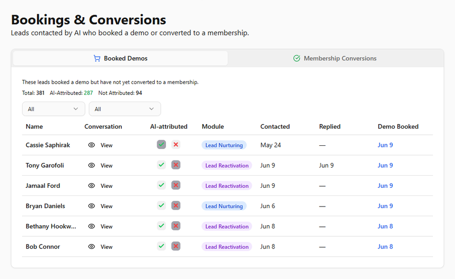
Tracks the journey that matters most: people who came in for a first visit or trial and whether they converted into paying members. It connects the AI's outreach to real outcomes in your CRM so you can see conversion, not just activity.
Use it to: measure trial-to-member conversion and see the AI's role in closing them.
Your AI Employees
This group is the working floor, the live conversation inboxes. Each AI Employee handles one category of contact. You can open any of them to read every thread, see status at a glance, and jump in to take over whenever you want.
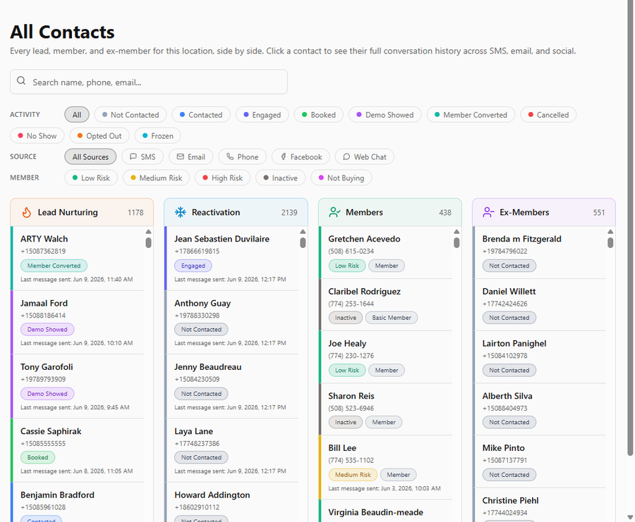
The complete directory of everyone in your system across every channel, leads, members, and former members, in one searchable place. The starting point when you want to look someone up regardless of which campaign they're in.
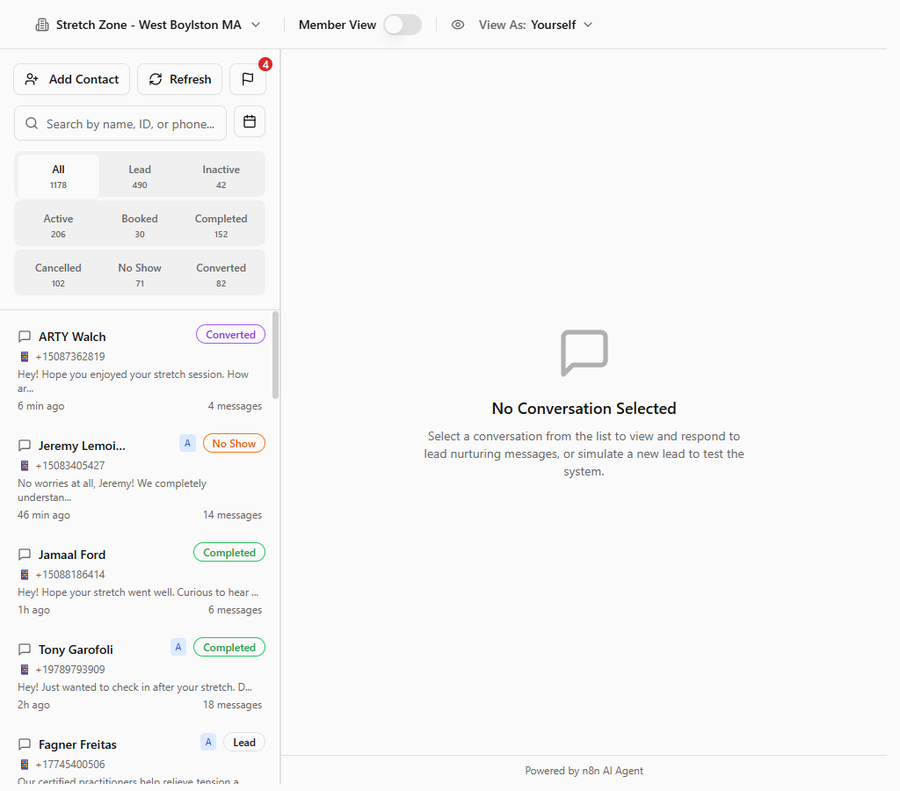
The assistant for brand-new leads. The moment someone shows interest, it reaches out fast, answers questions, and guides them toward booking a first visit, before the lead goes cold. Speed here is everything, and this employee never sleeps.
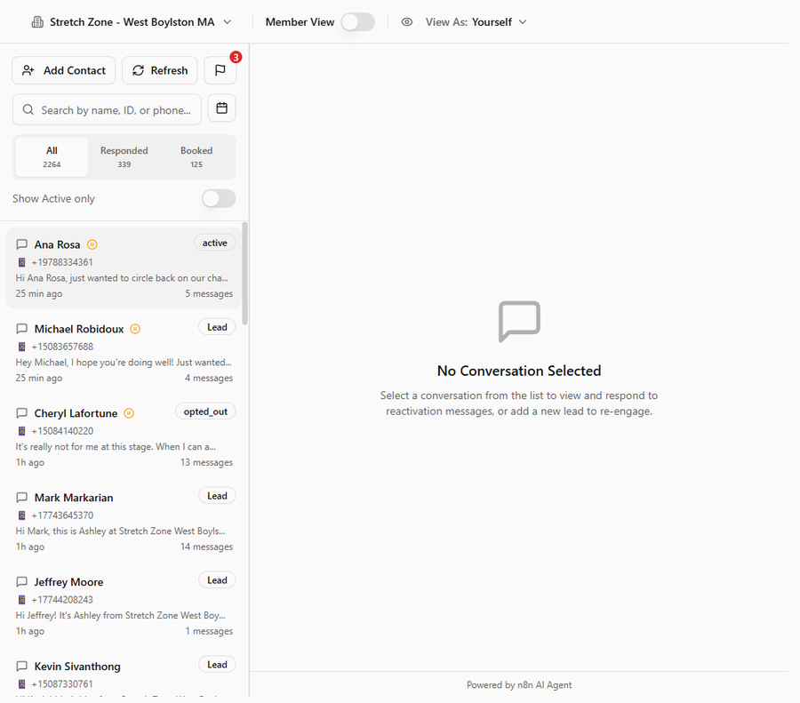
The win-back specialist for older leads who showed interest but never booked. It re-engages stale lists with fresh, friendly outreach, turning contacts you'd written off back into appointments.
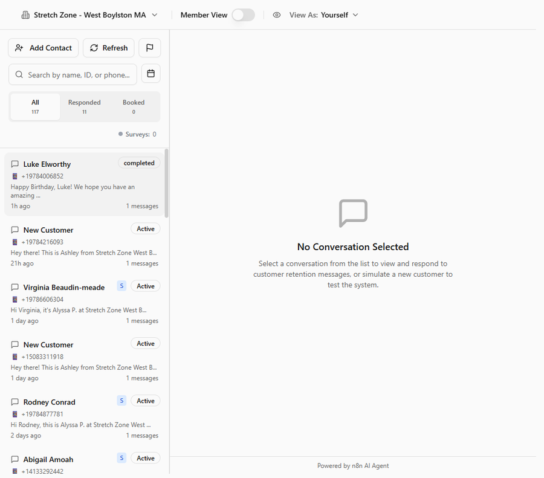
The assistant focused on your current members, well-timed check-ins, support, and re-engagement for anyone slipping toward cancellation. Keeping a member is far cheaper than finding a new one, and this employee works that angle every day.
Handles people who fill out a form on your website. It responds within moments, so a hot lead never waits hours for a reply, and routes them toward booking. Shown when your location uses website lead capture
You can take over any conversation at any time. When you do, the AI steps back so you and the assistant aren't both replying at once. See best practice #2 in section 08.
Information Sets: the controls
If the AI Employees are the staff, Information Sets are the training manual and the rules they follow. This is where you keep what the AI knows accurate and see exactly how it behaves. A few minutes spent here is the single biggest lever on your results.
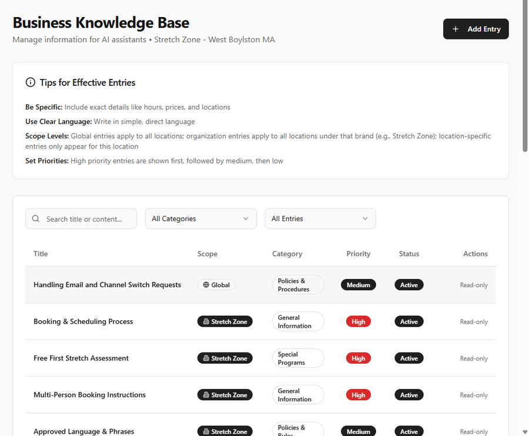
The facts the AI uses to answer questions: your pricing, hours, location, programs, current offers, and policies. The AI only speaks as accurately as this page allows, so keeping it current is the most valuable thing you can do. You can add and edit your own studio's entries right on this page; brand-wide entries are managed by Velocity. When a price or promo changes, update it here (or tell your Velocity contact) and every future message reflects it instantly.
Look after this first. An out-of-date Knowledge Base is the most common cause of an off-message reply.
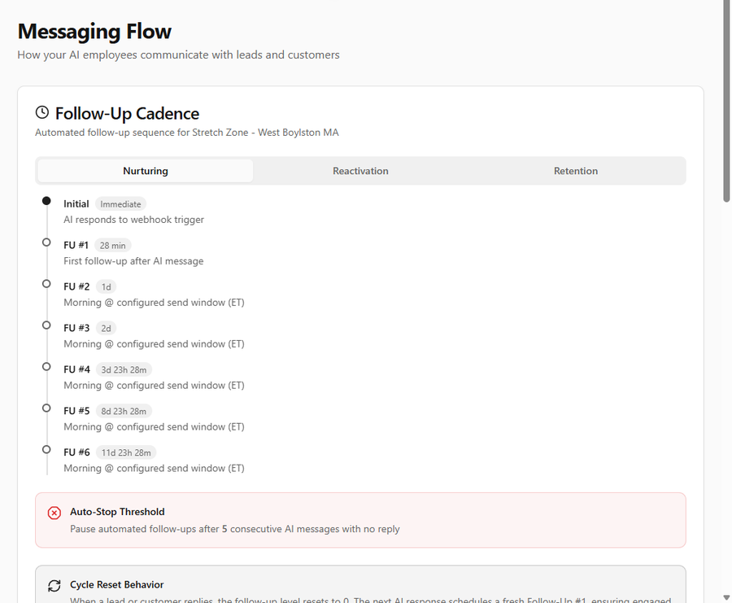
Shows you exactly how your follow-up sequences are tuned: how many times the AI reaches out, how long it waits between messages, and the auto-stop rule that ends a sequence after too many unanswered texts. It's the map of how a conversation unfolds over hours and days, so nobody is forgotten and nobody is pestered. Cadence changes are handled by your Velocity team, if you want follow-ups faster, slower, or fewer, just say so.
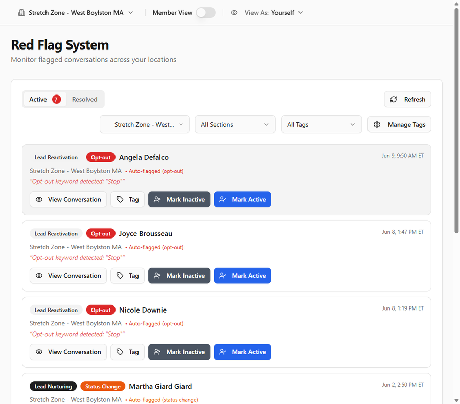
The human-review queue. When the AI encounters something sensitive or that it isn't confident about, it sets the message aside here for a person to check or rewrite, rather than guessing. A quick daily glance ensures the handful of conversations that need a personal touch get one.
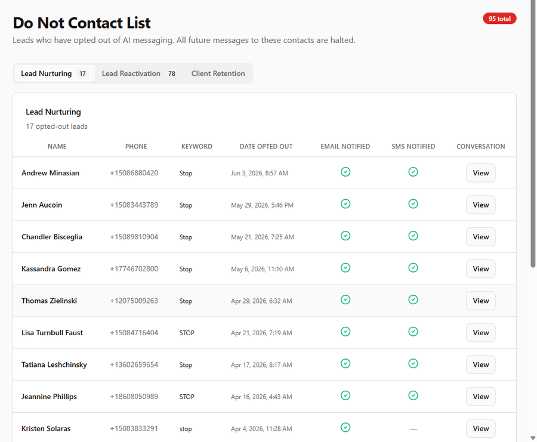
The suppression list. Anyone who opts out, replies "STOP," or shouldn't be messaged is recorded here and automatically excluded from all outreach. Opt-outs are handled for you and compliantly, this page is simply your visibility into who's on the list.
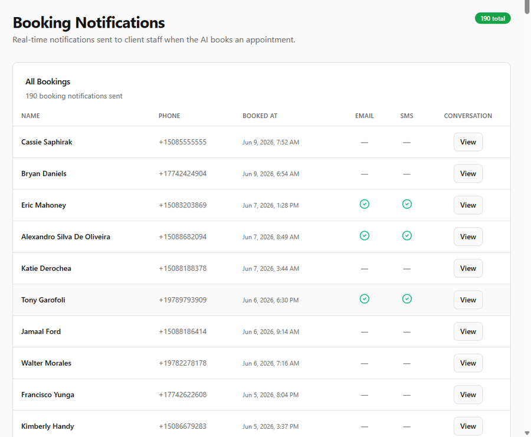
A running log of the appointments the AI has booked, so your front desk always knows what's coming in from automated conversations. Use it to keep your schedule and your team in sync with what the assistant is doing.
Reports
Beyond the live dashboard, Velocity emails you a set of automated reports, so the key numbers and the follow-up lists come to you on a schedule. Here is each report and who it's for.
A one-page summary of what the AI produced last month: net ROI in dollars, every campaign funnel (contacted, replied, booked, showed, converted), total messages sent, and your top staff by member conversions. The fastest read on whether the system is paying for itself.
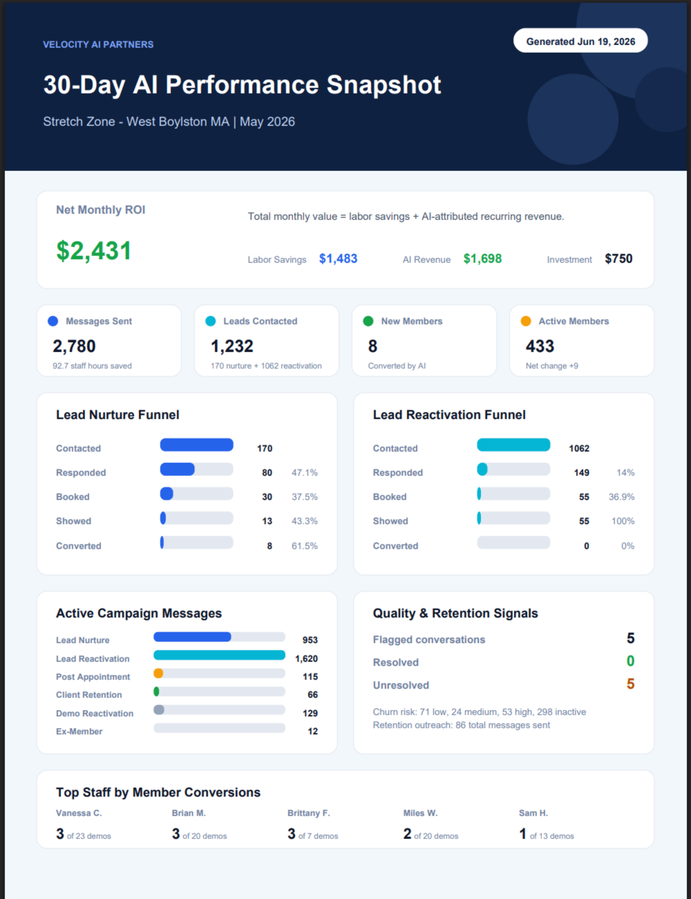
Shows where your leads actually come from. The Paid-Ad Summary puts your Meta and Google ad spend side by side against the leads and trials each channel produced, so you can see your real cost per lead and put budget where it works.
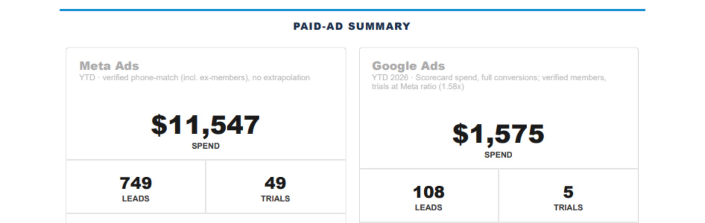
A daily list of members whose payments have failed or lapsed: how much is outstanding, how overdue it is, and why, pulled straight from your CRM so your front desk can follow up before a billing problem turns into a cancellation.
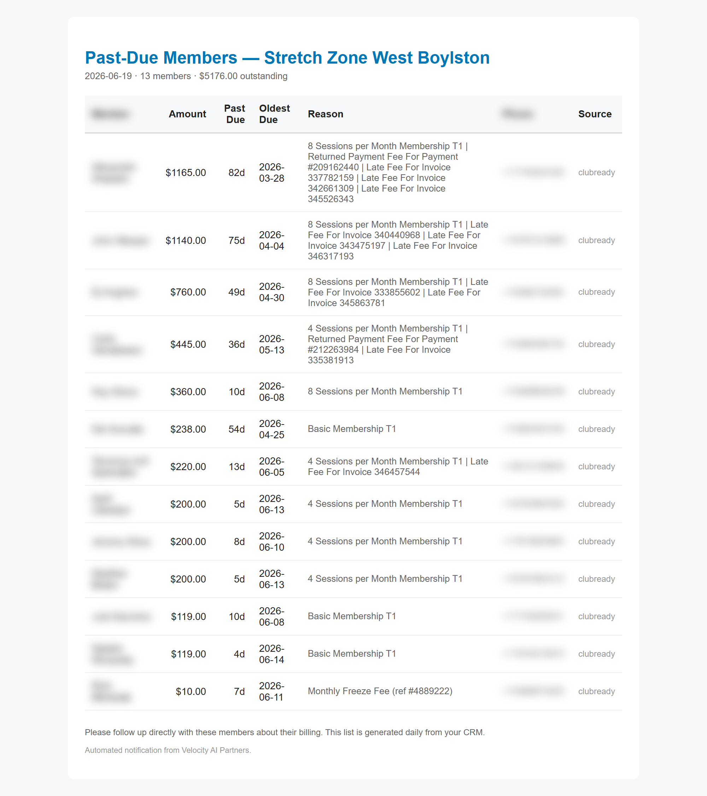
Every Friday, each staff member gets a ready-made list of the members who just crossed 30, 60, or 90 days, grouped under the employee who signed them up and sorted by churn risk with the homework already done. The personal milestone check-in takes minutes instead of digging through the CRM.
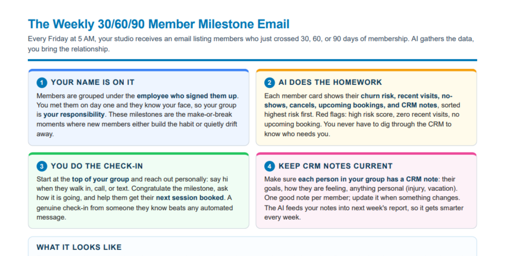
Want a report added, removed, sent on a different schedule, or delivered to specific people? Tell your Velocity contact and we'll set it up.
Best practices
A few simple habits make a big difference in your results.
- Keep your Knowledge Base current. The AI is only as accurate as what it knows. When pricing, hours, offers, or a promo change, update the Knowledge Base (or tell us) so every text quotes the right thing. This is the highest-leverage habit by far.
- Let the AI finish, or take over fully. If you want to handle a conversation yourself, jump in and take it over. Avoid sending a manual text in the middle of an active AI thread, as it can cross wires with the automated reply.
- Check the Red Flag queue daily. It's a quick glance, and it ensures the few conversations that genuinely need a human get a person's attention.
- Review the Value Tracker weekly. It's the clearest picture of what the system is earning you. A weekly look keeps you confident in the ROI and helps you spot trends early.
- Trust the opt-out handling. "STOP" requests, wrong-number replies, and quiet declines are managed automatically and compliantly. You don't need to track them by hand, the Do Not Contact list is your visibility into it.
- Give us a heads-up on big changes. New location, new staff phone number, a seasonal promo, or a pricing change? Tell us early so the campaigns and messages stay perfectly on-brand.
FAQ
Will the AI ever say something wrong about my business?
It answers strictly from your Knowledge Base, and anything it's unsure about goes to the Red Flag queue for a human instead of being guessed at. Keeping your Knowledge Base current is what keeps replies accurate.
Can I take over a conversation myself?
Yes, any time. Open the thread in the relevant AI Employee inbox and reply. The AI steps back so you're not both messaging at once.
What number do the texts come from?
Your studio's dedicated number, so to the customer it reads as your business, not a third party.
How are opt-outs and compliance handled?
Automatically. When someone opts out or replies "STOP," they're added to Do Not Contact and excluded from all future outreach. Polite declines and wrong-number replies are treated as opt-outs too.
Does it work across multiple locations?
Yes. Every page filters to the location you select, with conversations, numbers, and settings kept separate per studio.
Do I have to manage the campaigns?
No. They run automatically based on events in your CRM. You can see what's active and how it's performing on the Campaigns page, but there's nothing to operate day to day.
Getting help
For a change request, a question, a new promo, or to add a location, reach out to your Velocity point of contact and we'll take care of it. You can also sign in to your dashboard any time at velocityaipartners.app.
The features visible in your account depend on your brand, CRM, and plan, so your sidebar may not show every page described here. If something's missing that you'd like turned on, just ask.